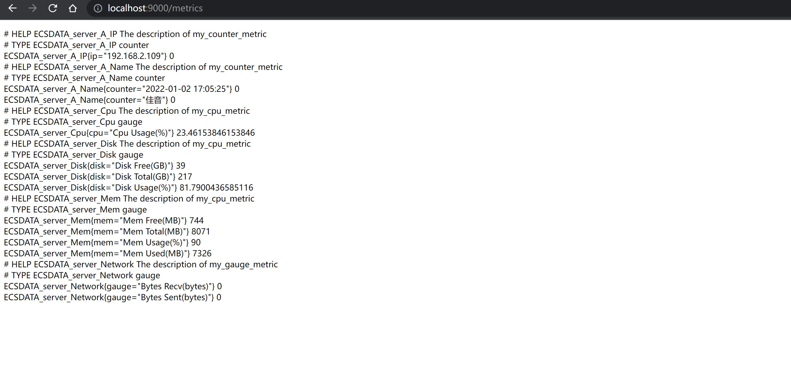

prometheus exporter 开发
Exporter 本身是一个 http 服务，其指标结果只要符合 Prometheus 规范就可以被 Prometheus 使用。而 prometheus 提供了一个go语言的包来简化开发工作。
client_golang
Prometheus 的 client库提供了实现自定义Exportor的接口，Collector接口定义了两个方法 Describe 和 Collect，实现这两个方法就可以暴露自定义的数据：
Describe(chan<- *Desc)Collect(chan<- Metric)
步骤
添加
prometheus metricshttp服务，并在某个服务端口上监听 ：1
2
3
4
5
6
7
8
9
10
11
12
13
14
15
16
17
18
19
20
21
22
23
24
25var (
listenAddr = flag.String("web.listen-port", "9000", "An port to listen on for web interface and telemetry.")
metricsPath = flag.String("web.telemetry-path", "/metrics", "A path under which to expose metrics.")
metricsNamespace = flag.String("metric.namespace", "ECSDATA", "Prometheus metrics namespace, as the prefix of metrics name")
)
func main() {
flag.Parse()
metrics := collect.NewMetrics(*metricsNamespace)
registry := prometheus.NewRegistry()
registry.MustRegister(metrics)
http.Handle(*metricsPath, promhttp.HandlerFor(registry, promhttp.HandlerOpts{}))
http.HandleFunc("/", func(w http.ResponseWriter, r *http.Request) {
w.Write([]byte(`<html>
<head><title>A Prometheus Exporter</title></head>
<body>
<h1>A Prometheus Exporter</h1>
<p><a href='/metrics'>Metrics</a></p>
</body>
</html>`))
})
log.Printf("Starting Server at http://localhost:%s%s", *listenAddr, *metricsPath)
log.Fatal(http.ListenAndServe(":"+*listenAddr, nil))
}实现
Collector接口1
2
3
4
5
6
7
8
9
10
11
12
13
14
15
16
17
18
19
20
21
22
23
24
25
26
27
28
29
30func (c *Metrics) Describe(ch chan<- *prometheus.Desc) {
for _,m := range c.metrics {
ch <- m
}
}
func (c *Metrics) Collect(ch chan<- prometheus.Metric) {
c.mutex.Lock()
defer c.mutex.Unlock()
mockCounterMetricData, mockGaugeMetricData, mockCpuMetricData, mockDiskMetricData, mockMemMetricData, mockIpMetricData := c.GenerateMockData()
for host, currentValue := range mockCounterMetricData {
ch <- prometheus.MustNewConstMetric(c.metrics["my_counter_metric"], prometheus.CounterValue, float64(currentValue), host)
}
for host, currentValue := range mockGaugeMetricData {
ch <-prometheus.MustNewConstMetric(c.metrics["my_gauge_metric"], prometheus.GaugeValue,float64(currentValue),host)
}
for host, currentValue := range mockCpuMetricData {
ch <-prometheus.MustNewConstMetric(c.metrics["my_cpu_metric"], prometheus.GaugeValue,float64(currentValue),host)
}
for host, currentValue := range mockDiskMetricData {
ch <-prometheus.MustNewConstMetric(c.metrics["my_disk_metric"], prometheus.GaugeValue,float64(currentValue),host)
}
for host, currentValue := range mockMemMetricData {
ch <-prometheus.MustNewConstMetric(c.metrics["my_mem_metric"], prometheus.GaugeValue,float64(currentValue),host)
}
for host, currentValue := range mockIpMetricData {
ch <-prometheus.MustNewConstMetric(c.metrics["my_ip_metric"], prometheus.CounterValue,float64(currentValue),host)
}
}用
gopsutil来获取监控指标，代码略；
展示

